July 24, 2021
My 4th State HP, Boundary Peak was a slog! Starting at over 9,000' we hiked 10+ miles round trip with over 4,000' of elevation gain. Sitting at the northern terminus of the White Mountains on the border between California and Nevada, Boundary Peak is actually subpeak of Mount Montgomery which sits just across the border in California. Had a great time completing hiking with my dad and seeing some wild horses on the way!


My 25th state high point (if you include D.C.), Jerimoth Hill was a short peaceful hike through the trees with a nice little rock right at the "summit". The final high point on my cross country road trip the stroll gave me a good chance to reflect after a long adventure. Check out the full story to see the other 10 state high points and 2 national park high points I completed on my road trip.
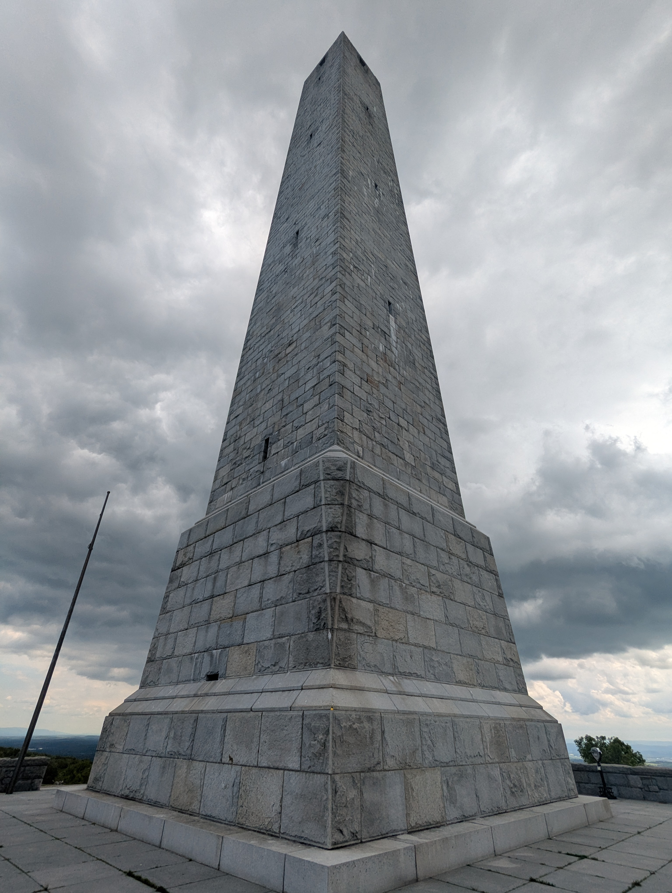
My 24th state high point, High Point has one of the biggest monuments I have seen yet. I had to rush the short distance from the parking lot to the top to beat a school bus full of screaming 3rd graders, but a passing rain cloud provided a nice lighting contrast. Check out the full story to see the other 10 state high points and 2 national park high points I completed on my road trip.
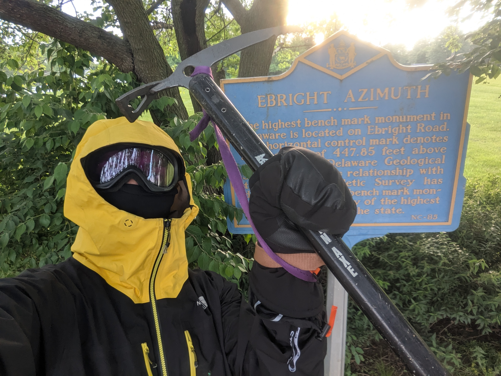
My 23rd state high point, trying to figure out where to park to no annoy the neighbors was the hardest part of summiting Ebright Azimuth. The crosswalk to the top was also somewhat treacherous. Check out the full story to see the other 10 state high points and 2 national park high points I completed on my road trip.

My 22nd state high point, Campbell hill has quite a few buildings all around and on its summit. The view was alright. Check out the full story to see the other 10 state high points and 2 national park high points I completed on my road trip.

My 21st state high point, Hoosier Hill is more like a small rise above the surrounding fields. The forest on its top is nonetheless quite pretty. Check out the full story to see the other 10 state high points and 2 national park high points I completed on my road trip.

My 20th state high point, Taum Sauk Mountain reminded me a lot of the hills around Pittsburgh in western PA. Good views, but the highlight was certainly rescuing a box turtle from the road. Check out the full story to see the other 10 state high points and 2 national park high points I completed on my road trip.
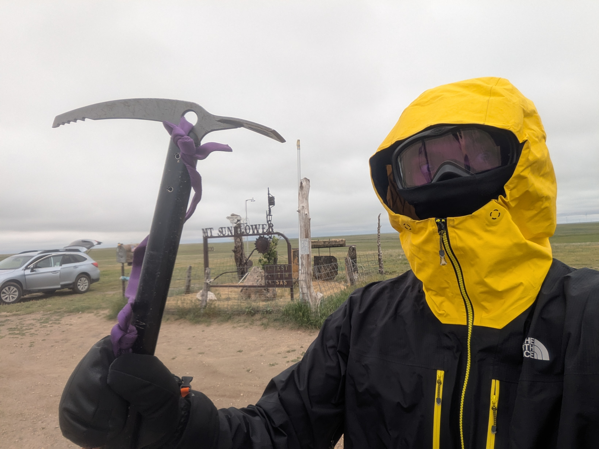
My 19th state high point, Mount Sunflower is what I like to call a boundary condition. If you moved the border between Kansas and Colorado less than a mile in either direction east or west, instead of the high point it would be just another rolling hill. Nonetheless the silly monuments at the top made it a fun visit. Check out the full story to see the other 10 state high points and 2 national park high points I completed on my road trip.
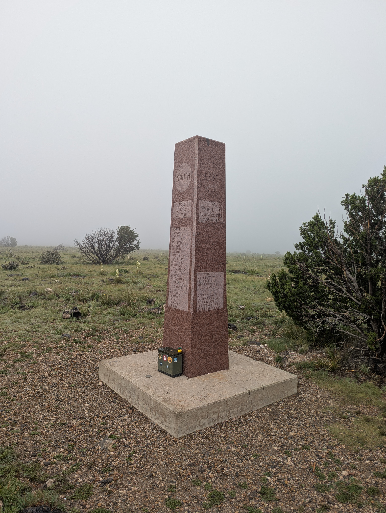
My 18th state high point, Black Mesa was a race against some serious thunderstorms. While the clouds kept me from getting any meaningful views, the wildflowers and wildlife did not disappoint. Check out the full story to see the other 10 state high points and 2 national park high points I completed on my road trip.
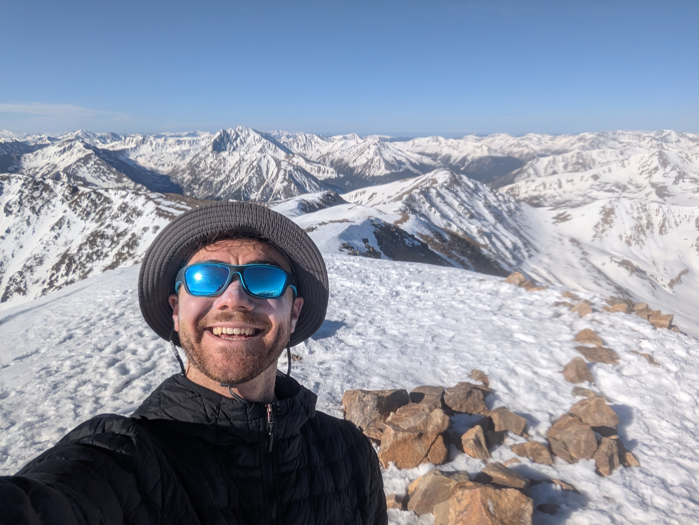
My 17th state high point, Mount Elbert was an add on to my cross country road trip, and having climbed Wheeler Peak the day before my legs were feeling it on the way down after another 4,000 ft of climbing. Some post holing was required but I couldn't complain with the clear blue skies all around over the undercast on the way up. Check out the full story to see the other 10 state high points and 2 national park high points I completed on my road trip.
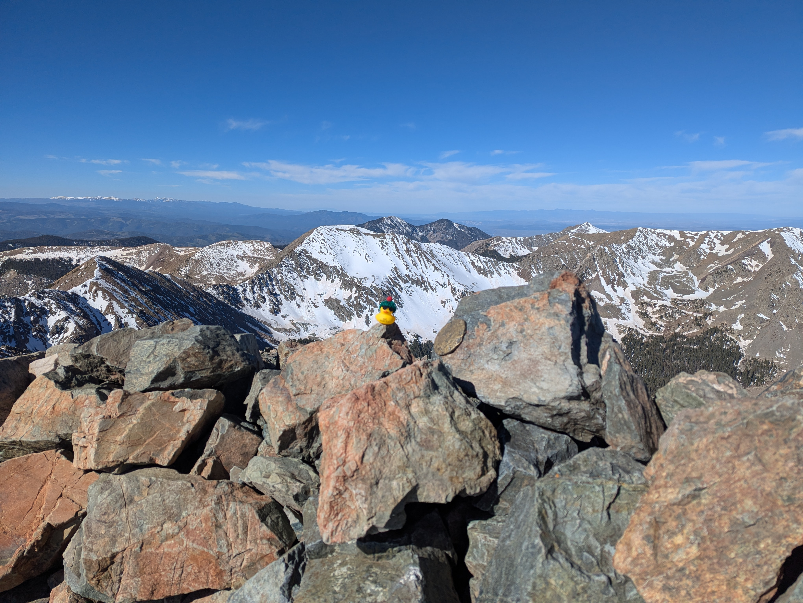
My 16th state high point, Wheeler Peak represents an ideal hike: low miles, good elevation gain, and excellent views. Starting high from the trailhead at 10,000 ft I quickly entered patchy snow fields and while I didn't need my ice axe for the way up I was glad to have it for some short glissades on the way back down. Check out the full story to see the other 10 state high points and 2 national park high points I completed on my road trip.
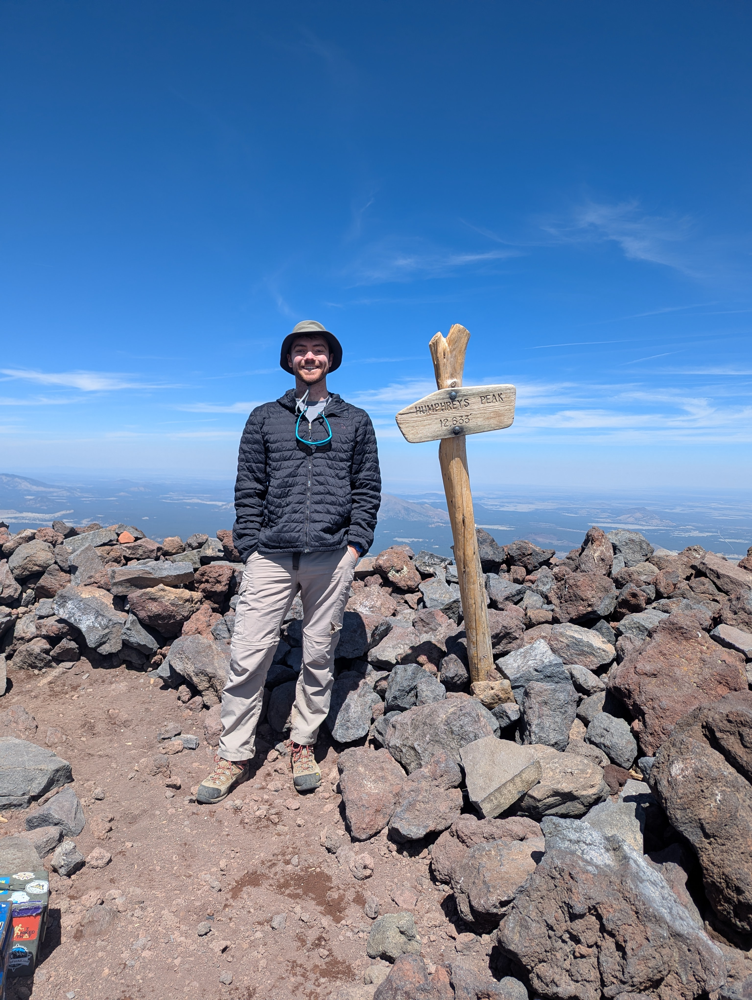
My 15th state high point, Humphreys Peak was the first state high point on my cross country drive, and almost my last. Having started at sea level four days earlier I had acclimated well but had to navigate some treacherously icy snowfields below tree line to make it to the top. Check out the full story to see the other 10 state high points and 2 national park high points I completed on my road trip.
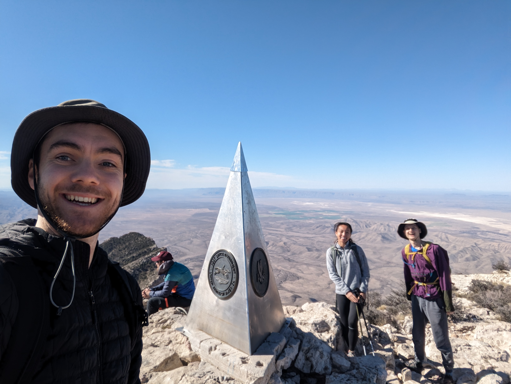
My 14th State HP, Guadalupe Peak was my first in the desert southwest and provided absolutely beautiful vistas. Guadalupe is in the sweet spot in terms of effort and reward where a significant effort is needed but the views more than make up for the calories burned. The immediate surrounding attractions of Guadalupe National Park and Carlsbad Caverns National Park make a great experience even better. Check out the full story to see the four national parks we visited - White Sands, Guadalupe, Carlsbad Caverns, and Big Bend - as well as the main goal of the trip: seeing a total eclipse of the sun!

My 13th State HP, Black Mountain is the highpoint along a ridge that serves as the southern end of the eastern border between Kentucky and Virginia. Located in a very sparsely populated area, Harlen County Kentucky, the summit is the site of the areas communication tower and you are very likely to have the whole trail to yourself. But watch out for black bears! We saw a couple on our drive down the mountain. Check out the full story to see photos of the hike, the Virginia State HP which we also visited on this trip, as well as photos from our time in New River Gorge and Shenandoah National Parks.

My 12th State HP, Mount Rodgers was a decent but cold hike. Following the along a section of the Appalachian trail for much of the hike the trail transitions from wet cobbles in the forest to exposed shrub and grasslands on the south facing slopes. There is a nice spruce forest toward the top which meant nice moss but no view. Check out the full story to see photos of the hike and the other sites during our trip to the Kentucky State HP along with New River Gorge and Shenandoah National Parks.
My 11th State HP, Mount Greylock is a drive up with an absolutely incredible view east looking directly over the town of Adams almost 3,000' below. A nice ornamental observation tower caps off the great peak. We *barely* made it to the top begore sunset as we had just come from Connecticut's Mount Frissell the same afternoon. Check out the full story to see photos of the other highpoints we visited on our trip along with Acadia National Park.

My 10th State HP, Mount Frissell is what I would call a "boundary condition", as the top of Mount Frissell is actually in Massachusetts and the highest point in Connecticut is therefore the shoulder of the mountain. Nonetheless the hike to the peak has some steep sections including some rock scrambling that makes it great fun. Check out the full story to see photos of the other highpoints we visited on our trip along with Acadia National Park.
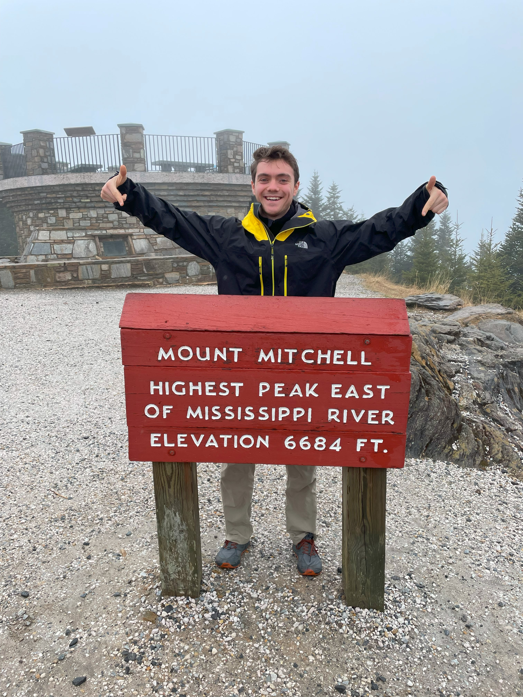
My 9th State HP, Mount Mitchell was a relatively easy drive up the mountain, only "relatively" easy because a lovely fog reduced visibility to almost zero at points. Mount Mitchell is the highest point east of the Mississippi, just barely beating out Tennessee's Clingmans Dome. Check out the full story to see the other highpoints we visited on our trip along with Smokey Mountain National Park.
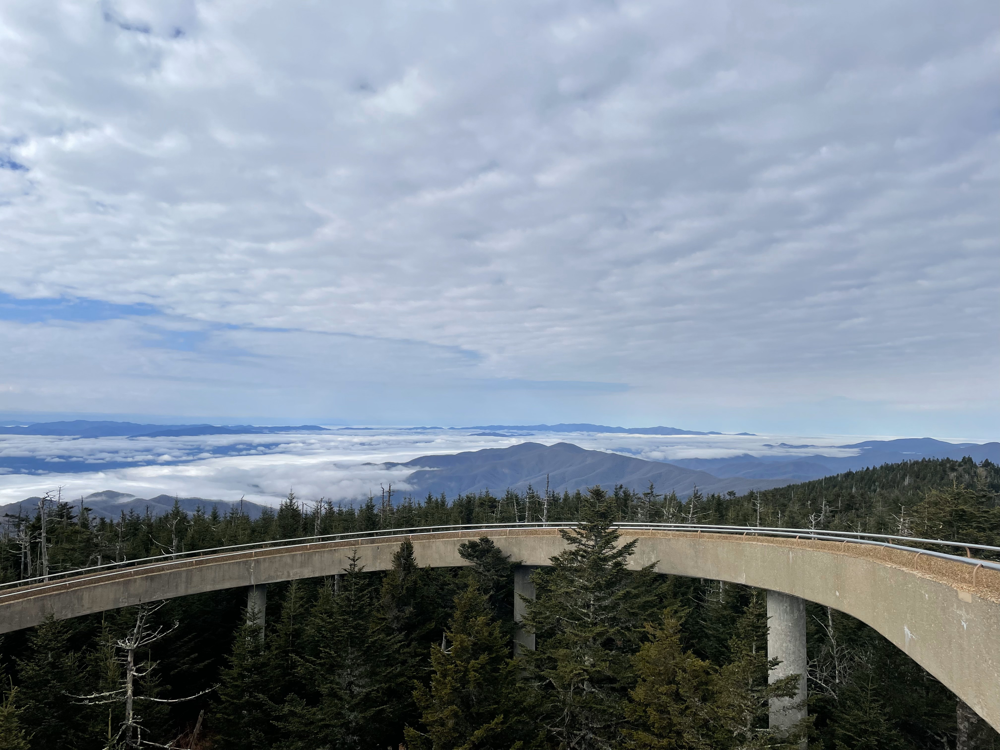
My 8th State HP, traditionally Clingmans Dome is an easy 5 minute stroll from a parking lot below. Visiting in early March however the road to the lot was closed so we got to do a *lovely* 16 mile round trip road walk to check this one off the list. Check out the full story to see photos of our decent into madness on the way back and the other highpoints we visited on our trip along with Smokey Mountain National Park.
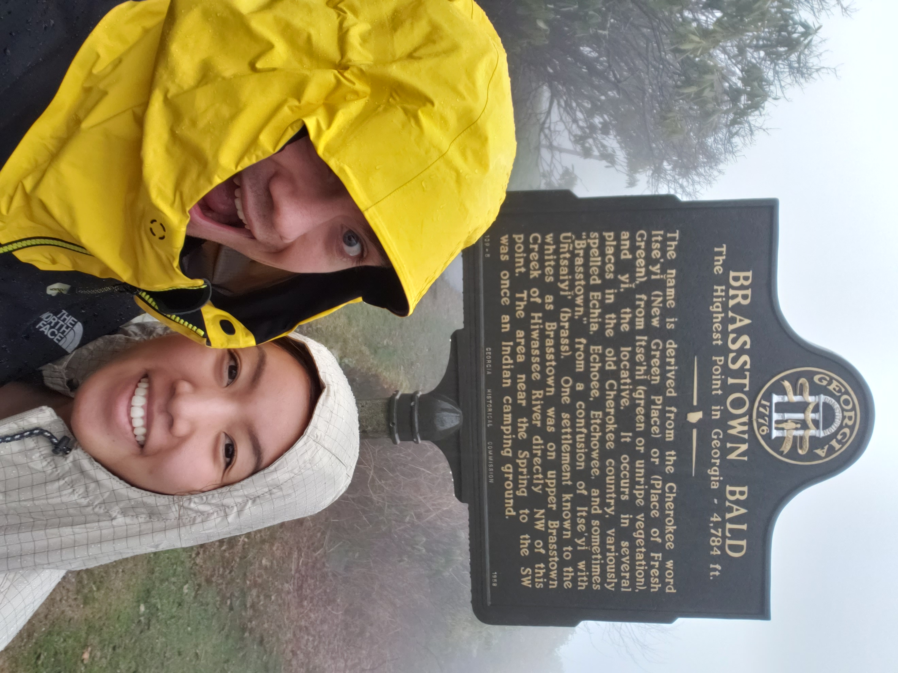
My 7th State HP, Brasstown Bald was another foggy drive topped off with a foggy walk to the summit. The placards at the top had great photos of the panoramic view however so we didn't miss it! Check out the full story to see photos of the placards and the other highpoints we visited on our trip along with Smokey Mountain National Park.
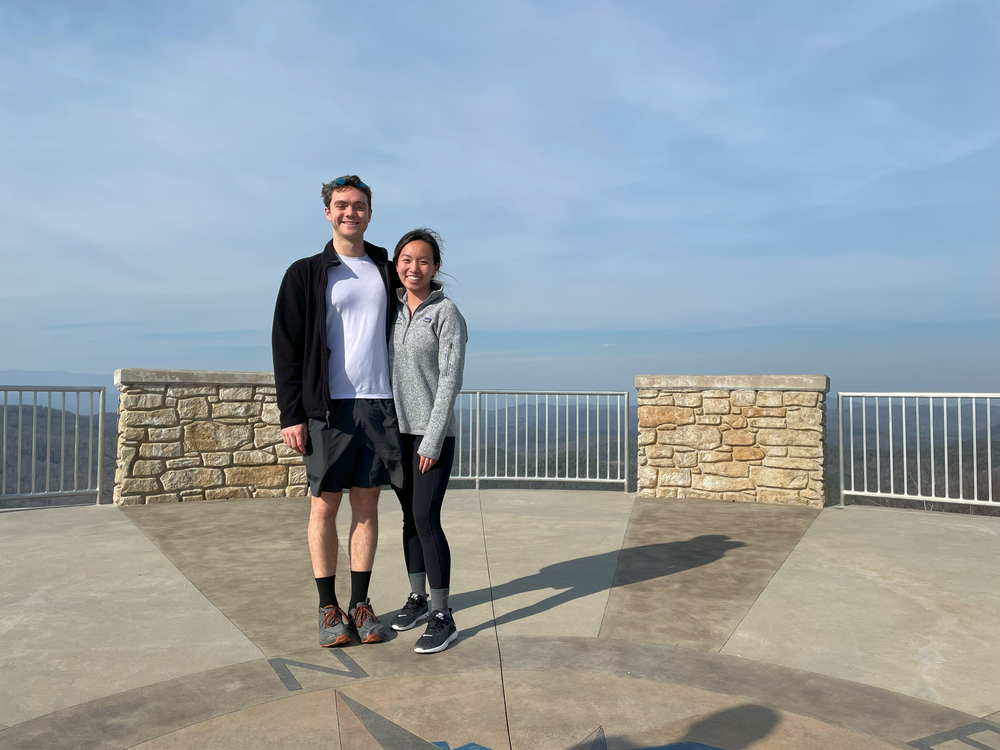
My 6th State HP, Sassafras Mountain is a drive up with an impressive concrete walking platform on the top that adds at least thirty feet of elevation. Check out the full story to see photos of the other friends we brought along and the other highpoints we visited on our trip along with Smokey Mountain National Park.

My 5th "State" HP, Point Reno is the highest point in the District of Columbia and is a nice public park. Finding the actual highest point and its marker proved somewhat difficult but after much rummaging around in the grass we found it!

My 3rd State HP, Hoye-Crest is a nice walk, made nicer by the fall foliage when we visited. There is a great bench at the top looking over windmills in the distance, a great spot for a snack :). Check out the full story to see photos of the other highpoints we visited on our trip along with Shenandoah National Park.
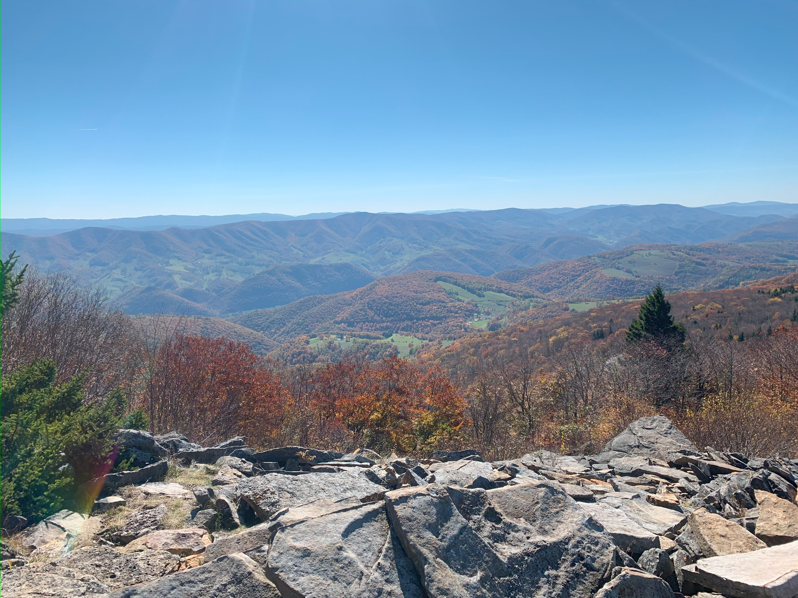
My 2nd State HP, Spruce Knob was a quick jaunt from the parking area through a beautiful spruce forest with moss carpeting the ground. We visited at peak foliage so the leaves on the drive up were as or more impressive than the view itself. Check out the full story to see photos of the lovely leaves and the other highpoints we visited on our trip along with Shenandoah National Park.
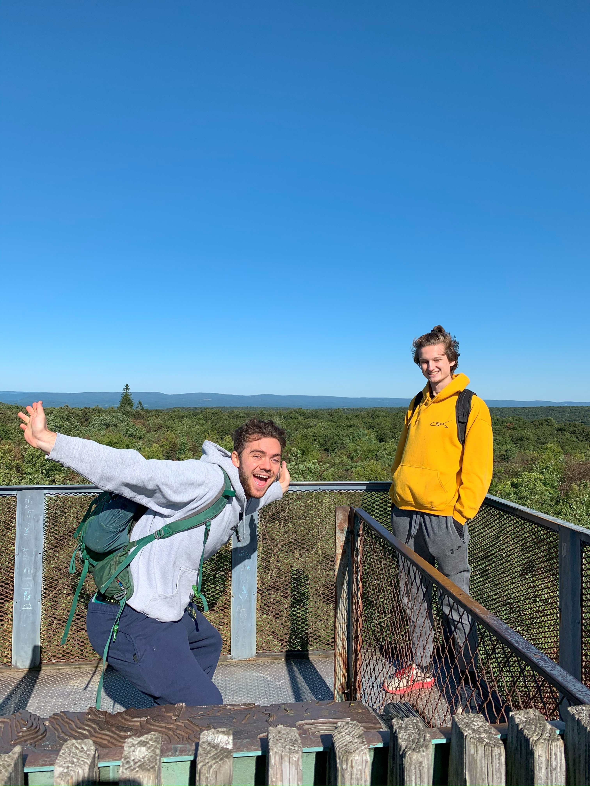
My 1st State HP, Mount Davis is best described as a wooded hill in the Alleghany Highlands. The forest floor is covered in some great ferns and carpets of moss. The top of the mountain has a nice fire tower, it was a little windy when we were there :). Check out the full story to see photos of the surrounding forests and some cool rock formations!